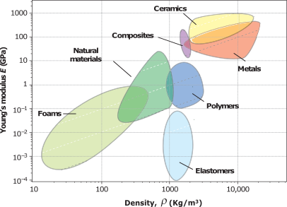
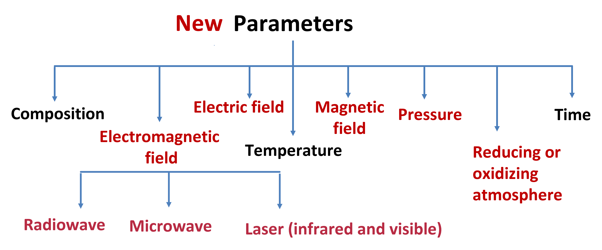

Designed For Work
Introducing the first ever 5G enabled tablet. You've got a tablet that let's you play harder and work smarter.
Innovation does not come from the information or knowledge; it arises from the wisdom gathered from one concept and applied to an entirely unrelated problem. Material science offers that central spot where one can work in interdisciplinary research fields such as metallurgy, mechanical, electronics, chemical, biology and computer sciences to drive the technology forward.
Welcome to Material Science
Start by doing what's necessary; then do what's possible; and suddenly you are doing the impossible.
- Francis of Assisi
Research Map
Science
 Any reliable technology stands on sound scientific foundation. Being an academic research lab, scientific understanding comes first. Our
research group focuses on three major field of researchs: Composites, Field assisted processing, and Machine learning. While appearing disconnected
at first sight, they are pieces of the same jigsaw puzzle, commonly known as
"Material's Tetrahedron". This tetrahedron emphasizes on four
independant pillars in developing technologies that we can depend on: Structure, Processing, Properties and Performance.
Any reliable technology stands on sound scientific foundation. Being an academic research lab, scientific understanding comes first. Our
research group focuses on three major field of researchs: Composites, Field assisted processing, and Machine learning. While appearing disconnected
at first sight, they are pieces of the same jigsaw puzzle, commonly known as
"Material's Tetrahedron". This tetrahedron emphasizes on four
independant pillars in developing technologies that we can depend on: Structure, Processing, Properties and Performance.
Crystal structure and processing technique determine the final properties of materials. But as learn from Ashby's Material selection Maps, there
are always trade-off in properties. For example, hard materials have limited ductility. To overcome this natural
challenge, we design composites of complementary materials and take advantage of field assisted processing to achieve desired
performance. Machine Leaning and FEM (finite element method,
YouTube Video) are used as tools to understand and simulate the corelations among the corners of the
Tetrahedron.
Composites

Ashby’s maps highlights the need for composite designs where materials of different properties (often contrasting) are stitched together to provide
superior properties. Properties that no single material exhibit, kind of Meta-material. Nature, being the greatest designer/architecture has done
it over and over again, giving rise to a new field of study "Bio-inspired designs."
A very simple example of a composite, human bones , is a composite of hard mineralized tissue (cortical) and soft
organic elastic fibers (collagen). The hardened matrix, formed by Calcium Hydroxylapatite, grows into an open-lattice structure that allows
blood vessels. This unique design and composition allows bones to be hard and fracture resistant while being light-weight. Additionally, it is
also functionally graded material with hard cortical bones on the surface and spongy Trabecular bone inside. An idea that has been adopted in TMT (
Thermo Mechanically Treated) steel bars, used to reinforce concrete (another example of popular composite). We design the structure of composites
made up of metal-ceramic-polymers for armor, functionally graded materials, thermal barrier coating and shock absorption applications.
Field Assisted Processing
Ceramic parts are primarily fabricated by sintering. Sintering is a process in which powders of desired material are
first compacted into desired shape and then fired to a high temperature. High temperature facilitates the diffusion
of constituent particles into a solid dense mass. Sintering, in the form of pottery, is one of the oldest invention
of human civilization. However, the process has changed little until a few decades ago when our scientific understanding
of sintering mechanisms improved. Researcher showed that pressure, rapid heating and microwave heating can not only
shorten the processing time but also improved the properties of fabricated material. The field assisted sintering (also known
as Flash Sintering) is the latest addition to the list, in which we apply electric field directly to the ceramics (at relatively
lower furnace temperature).
In the figure accentuates the role external fields play in reducing the energy consumption and time required for processing, by introducing a
new path for duffusion)create non-equilibium crystal structural changes that give rise to novel properties, even in traditional ceramics.
For a typical case of 3 mol% yttria stabilized zirconia, as we move from convention sintering to pressure assisted (hot press), Microwave (MW),
Spark plasma sintering (SPS) to flash sintering, the sintering temperature dropped from 1500 C to 800 C. The right most figure shows that as we apply
higher and higher electric field (DC voltage)the sintering temperature drops and densification rate enhances.

Our hypothesis is that these externally applied fields (shown in red)create non-equilibium crystal structural changes that give rise to novel properties, even in traditional ceramics. play in reducing the energy consumption and time required for processing . We are working to come up with a unifying theory which can explain the field-matter interactions, and to harness this understanding to thermal barrier coatins (TBC), functional ceramics, and storage devices (batteries).
Machine Learning
 There isn't any active field of research that is not utilizing Machine learning (ML) or Artificial Intelligence (AI)
to unravel the emperical relationships between the causes and the effects. In material science, ML is
finding applications in understanding phase evolutions for complicated systems, predicting material properties of new
alloy compositions, ML aided molecular dynamic simulations, corelating properties to the processing history, Microstructure
analysis, to name a few (link).
There isn't any active field of research that is not utilizing Machine learning (ML) or Artificial Intelligence (AI)
to unravel the emperical relationships between the causes and the effects. In material science, ML is
finding applications in understanding phase evolutions for complicated systems, predicting material properties of new
alloy compositions, ML aided molecular dynamic simulations, corelating properties to the processing history, Microstructure
analysis, to name a few (link).
In our lab, we are using Neural Networks, Random Forest and UNET along with Finite Elemental Method (FEM) simulation to
formulate the processing parameters and intelligent designs of composites. Our group is currently working on grain boundary detection
, orientation of pearlitic lamellae, intelligent phase identification, peak fitting of X-ray diffractions.